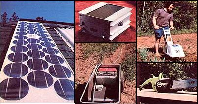

CLOCKWISE FROM ABOVE: One panel of photovoltaic cells?such as this ARCO Solar installation on the roof of the Pratts' residence?can supply a goodly share of a homestead's electrical needs. . . . A power inverter can change 12-volt DC current into 110-volt AC power. . . . Richard Pratt uses a 12-volt Sears electric rototiller (unfortunately, this model has been discontinued) when he cultivates his garden. . . . A solar-powered chain saw quietly cut all the Pratts' firewood last winter. . . . Richard and Maureen irrigate their vegetable patch with the help of this sun-energised Teel water pump